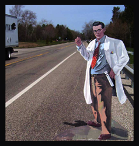

|
 "Pioneers Hitchhiking in the Valley of Heart's Delight" consists of five life-size cutouts painted with the portraits of people that were responsible for advancing the technology that drives Silicon Valley. These cutouts will be implanted with small GPS devices and then abandoned in public places in and around San Jose with a request for passers-by to deliver them to a prescribed location. Real-time information about them and their whereabouts will be part of an art work at YLEM's booth in the conference center.
Members of YLEM, artists using science and technology based in San Francisco with members all over the world, have teamed up for this Inter City proposal. A key point of having the ISEA conference in San Jose in the Silicon Valley is to recognize the importance that computing and other local industries contribute to contemporary artists. The history of this location and the people that paved the way for others should be included somewhere in the artwork and presentations. Not many people even in this area would probably recognize the faces of the pioneers of transistors and semiconductors. The Valley of Heart's Delight was Silicon Valley's original name, changed because of the importance of this industry. We present here a way to engage the city residents in learning a bit about their history and its link to the artists of ISEA. The activity of making full-size wooden cutouts of people and sending them "hitch hiking" was originally conceived by Jim Pallas in 1981. His first cutout was abandoned on a Michigan country road with a note requesting that it be delivered to an art gallery in time for a party. This was his way of delivering his artwork to the gallery for an exhibit. To his delight, the cutout made the several days trip to the gallery by hitching a ride with a passer-by who was curious about the event. This willingness to give a stranger a ride may be lost in our current society, but we are going to try the technique in the Silicon Valley. One frustration with the original hitchhiker concept was that Pallas rarely knew the whereabouts of his cutout after he abandoned it. Many have not been seen since they were set out on the road. We hope to remedy this and follow their path by putting a GPS device (A device that utilizes a system of space satellites, computers, and receivers that is able to determine its latitude and longitude on Earth by calculating the time difference for signals from different satellites to reach it) inside the cutout. We found a GPS device by NaviCom that sends tracking information to a web page and would be perfect for this project. The real-time location of the five "hitchhikers" will be part of a computer installation art work by Michael Mosher. Mosher will provide a subjective interactive artistico-narrative on the several notable Silicon Valley "hitchhikers" whom Jim Pallas has set out to be picked up by passers-by alongside the area highways. The pioneers' historical importance to the region and tech industry grapples with their often curious, contradictory biographies will be part of the display. Web pages with the whereabouts of each cutout will be featured on the display. The display itself will be encased in a hand painted housing inspired by the subject matter of the project. Key figures we plan to focus on are Frederick Emmons Terman, who will depart from a MIT and arrive at Stanford College of Engineering; Robert Noyce who will depart from a pig farm in Iowa and arrive at the Noyce Museum at Intel; Lee de Forest who will depart from the Opera House in San Jose and arrive at the Perham Foundation Electronics History Museum at the San Jose Historical Museum in Kelley Park; Hewlet and Packard merged into one composite portrait will depart from a print cartridge display at a local Office Depot store in San Jose and arrive at Stanford College of Engineering; and William Shockley, who will depart from an Any Mountain outlet in San Jose and arrive at the fruit stand where his company got started. Pallas and Newdoll will abandon these hitch hiking pioneers at their starting points with instructions on where they are to go inscribed on the cutouts' backs. As an incentive, we will have a reward for those who aid the "hitchhikers" to arrive at their destinations. Publicity surrounding the figures would assist in getting our content to the general public. Pallas, who has created over twenty "hitchhikers" in th past quarter century, says the most interesting aspect of them are the surprising adventures in which they become involved due to their uncontrolled interaction with the public. We are curious to see where these "hitch hikers" will go and how they are received by the people in the community they have contributed so much to. URLs: http://www.ylem.org/artists/jpallas/hh/pioneers/
http://www.ylem.org/Hitchhikers/
http://www.theregister.co.uk/2006/08/04/hitch_sv/ |